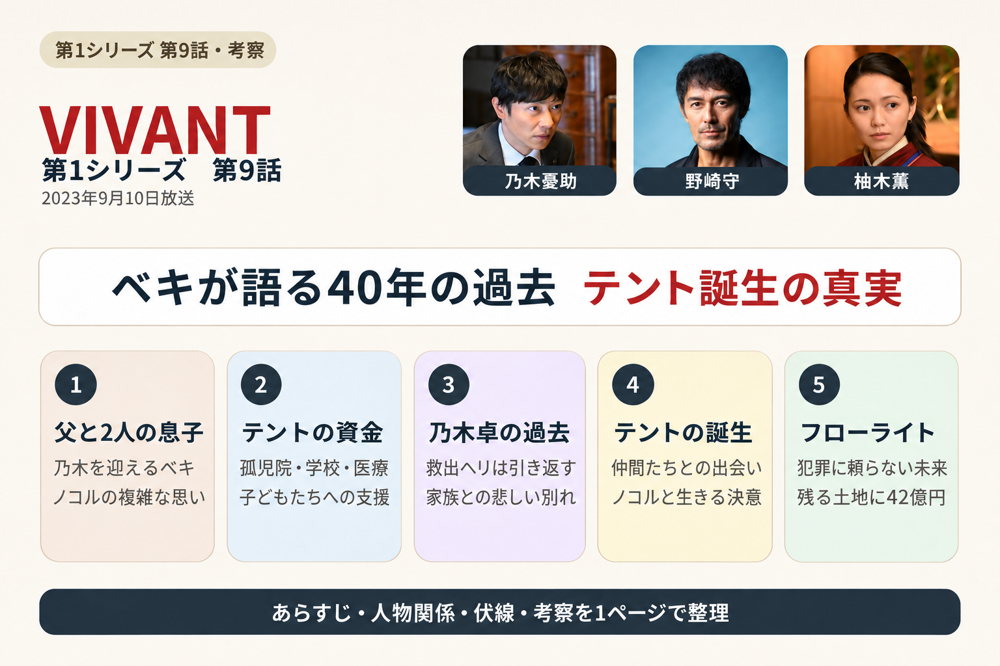
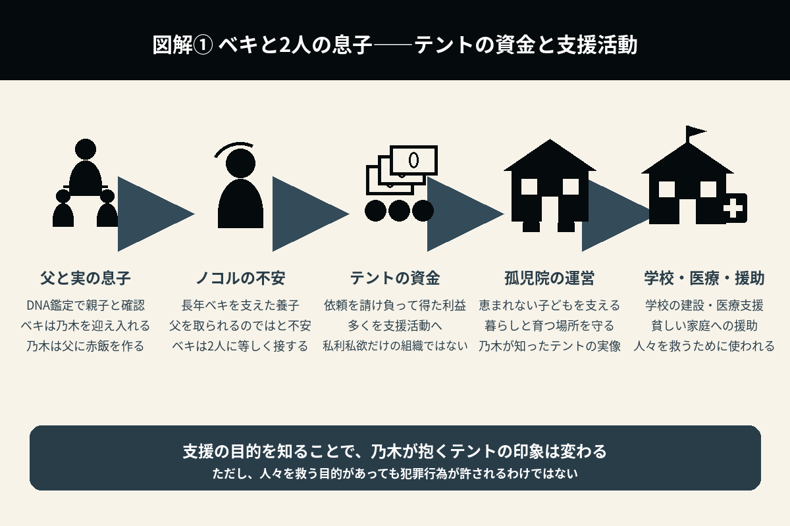
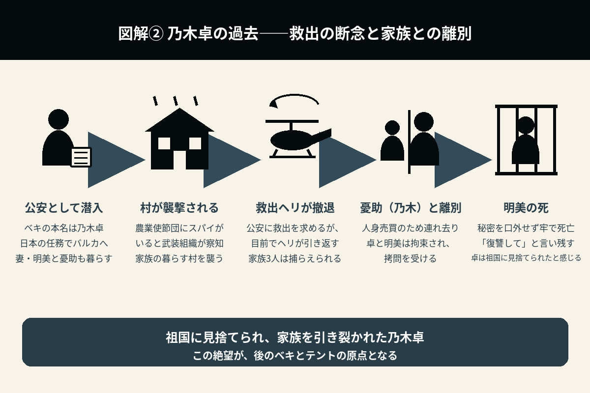
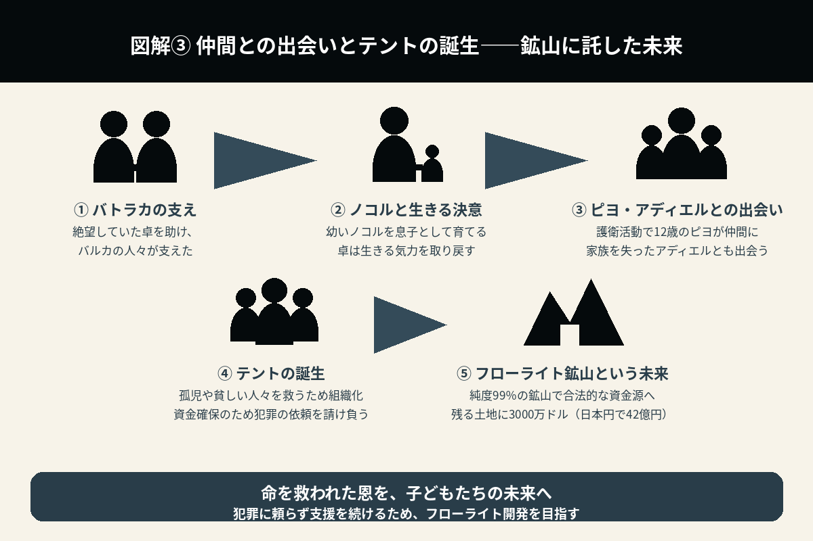

ベキが語る40年の過去
乃木卓の絶望と、テント誕生の真実
第9話は、『VIVANT』の中でも最も重要な回の一つです。これまで「敵」と思われていたベキの40年にわたる人生が語られ、テントが誕生した理由も明らかになります。アクション中心ではなく、人間ドラマとしての完成度が非常に高い一話でした。

1. ベキは乃木を息子として迎え入れる――ノコルの不安と、父に振る舞う赤飯
第8話では、DNA鑑定によって、乃木とベキが実の親子であることが確認された。
第9話では、その続きとして、ベキが乃木をテントの拠点へ迎え入れる。
一方、養子として長年ベキを支えてきたノコルは、複雑な心境だった。
実の息子が突然現れたことで、父を取られてしまうのではないかという不安を抱く。
しかし、ベキは、乃木にもノコルにも同じように接しようと努める。
この場面からは、ベキが冷酷な組織のリーダーである前に、1人の父親でもあることが伝わってくる。
会食に招かれた乃木は、ベキのために赤飯を作る。
2. テントの資金は何に使われているのか――孤児や貧しい人々への支援
乃木は、テントの活動を詳しく知ることになる。
これまで、テントは「テロで資金を集める組織」だと思われていた。しかし、その利益の多くは、次のような活動に使われていた。
- 孤児院の運営
- 学校の建設
- 医療支援
- 貧しい家庭への援助
さらに、依頼を引き受ける際にも、一般市民への被害を最小限に抑えるため、綿密な調査を行っていたことが分かる。
もちろん、だからといって犯罪行為が許されるわけではない。
しかし、テントが私利私欲のためではなく、「恵まれない子どもたちを救う」という目的を持って活動していることを知り、乃木も大きな衝撃を受ける。

3. フローライト開発の資金調達――乃木が株取引で得た20億7000万円
乃木は、大鳥製薬による治験失敗の隠蔽という不祥事に目を付ける。
ハセガワ証券の西村を通じ、30億円の資金を用意して、株価の下落によって利益を得る信用取引を行う。
その後、治験失敗の隠蔽をリークすると、ニュースなどで情報が拡散され、大鳥製薬の株価は下がっていく。
乃木は、さらに10億円を追加して取引を進める。
午後の取引では、乃木の思惑どおりに売りが広がり、株価はストップ安に。
最終的に株価は約半値まで下がり、売っていた株を買い戻すことで、20億7000万円の利益を得た。
4. ベキが語る40年前の真実――祖国に見捨てられた乃木卓と家族
乃木が、本当の家族になるためにテントの歴史を教えてほしいと申し出ると、ベキは過去を語り始める。
ここから、第9話最大の見どころである回想が始まる。
40年前、ベキは、本名の乃木卓として生きていた。
公安の任務でバルカへ潜入し、日本のために危険な活動を続けていた。
妻・明美と幼い憂助（乃木）も、現地で暮らしていた。
しかし、政情不安が激しくなり、イスラム武装組織の活動が活発化する。
農業使節団の中にスパイがいると察知した武装組織によって、村が襲撃された。
公安の助けで救出のヘリが近づくものの、目前で引き返してしまい、3人は捕らえられる。
憂助（乃木）は人身売買のために連れ去られ、拘束された卓と明美は拷問を受ける。
明美は秘密を口外せず、
「私たちをこんな目に遭わせた人たちを許さない。復讐して」
と言い残し、牢の中で亡くなった。
「祖国は、自分を見捨てた」
この出来事が、卓の人生を大きく変えてしまう。

5. ベキとバトラカ・ピヨ・アディエルとの出会い――ノコルが取り戻させた生きる気力
廃人のようになっていた卓（ノゴーン・ベキ）を迎えに来たのが、バトラカだった。
その後、卓は、まだ幼いノコルを見つける。そして、ノコルを息子として育てることを決意した。
ノコルの存在によって、卓は生きる気力を取り戻していく。
武装組織に銃で反撃した卓は、ほかの人々にも銃の扱い方を教えるようになる。
すると、近くの村から護衛の依頼が来るようになり、当時12歳だったピヨも仲間に加わった。
そんな中、護衛に出掛けた先で、卓たちの車にこっそり乗り込んでいたのが、家族を失って孤児となったアディエルだった。
絶望の中にいた卓を助けてくれたのは、バルカの人々だった。
この経験から、卓は、
「日本ではなく、この国の人々のために生きよう」
と決意するようになる。
役所広司と、青年時代を演じた林遣都の演技が高く評価された場面でもある。
6. テント誕生の理由――人々を救う理想と、犯罪に頼る現実
命を救われた卓は、その恩を返すため、仲間たちと組織を作る。
それが、後の「テント」だった。
当初の目的はテロではなく、
「孤児や貧しい人々を救う資金を集めること」
だった。
しかし、国家から支援を受けられない現実の中で、莫大な資金を得るため、犯罪組織から仕事を請け負うようになる。
善意だけでは、理想を実現できない。
その苦しい現実が、現在のテントにつながっていた。
7. フローライト鉱山という未来――合法的な資金源への転換
ベキは、乃木をある場所へ案内する。
それは、純度99％という、非常に価値の高いフローライト鉱山だった。
この鉱山を開発できれば、犯罪行為に頼らなくても、孤児院や学校を維持できる。
ベキは、「これが私たちの最後の仕事だ」という思いで、準備を進めていた。
つまり、テントは永遠に犯罪を続けるつもりではなく、合法的な資金源への転換を目指していたことが分かる。
ただし、残る区画はクーダンにも近く、地価が高い。その取得には、3000万ドル（日本円で42億円）が必要だった。

8. ノコルと乃木の距離――兄弟の間に芽生え始めた信頼
ノコルは乃木を警戒していたが、一緒に行動する中で、少しずつ印象が変わっていく。
乃木は、自分が実の息子だからと特別扱いを求めることはなく、ノコルを兄弟のように尊重する。
一方のノコルも、乃木が父の愛情を奪いに来た人物ではないことを、少しずつ理解し始める。
2人の間に生まれたわずかな信頼が、終盤へ向けて重要な意味を持つことになる。
そして乃木は、最後に、自分が「別班の任務」で来たことをベキへ正直に伝える。
父との再会や、テントの実像を知った経験は、乃木の任務とどのようにつながるのか。物語は、最終話へ向けて大きく動き始める。
第9話で新たに分かったこと
| ベキ | 元公安警察官・乃木卓であり、日本に見捨てられた過去を持つ。 |
|---|---|
| 明美と憂助（乃木） | 村の襲撃後、家族は引き離された。明美は拷問を受けて亡くなり、憂助（乃木）は人身売買のために連れ去られた。 |
| バトラカとノコル | バトラカが卓を支え、幼いノコルを育てることが、卓に生きる気力を取り戻させた。 |
| ピヨとアディエル | 護衛活動を通じてピヨが仲間に加わり、家族を失ったアディエルとも出会った。 |
| テント | 孤児や貧しい人々を救うために設立された組織であることが判明した。 |
| 乃木の資金調達 | 大鳥製薬の不祥事と株価下落を利用した信用取引によって、20億7000万円の利益を得た。 |
| フローライト鉱山 | 犯罪に頼らない資金源として開発を進めていた。残る区画の取得には、3000万ドル（日本円で42億円）が必要だった。 |
| ノコル | 乃木への警戒心が少しずつ薄れ、兄弟としての信頼が芽生え始めた。 |
| 乃木 | 最後に、「別班の任務」で来たことをベキへ正直に伝えた。 |
| 物語 | 「正義」と「悪」の境界が大きく揺らぎ、最終決戦への舞台が整った。 |
第9話の見どころ
第9話は、『VIVANT』全10話の中でも、最も涙を誘うエピソードの一つである。
最大の見どころは、ベキの40年にわたる人生が、丁寧に描かれる回想シーンだ。
日本のために命を懸けていた公安警察官の卓が、祖国に見捨てられ、家族を失ったと思い込み、それでもバルカの子どもたちを救うために生き続けた。その姿は、多くの視聴者の心を打った。
また、テントが単純な「悪の組織」ではなく、理想と現実の狭間で苦悩しながら活動してきたことも明らかになる。
そのため、第9話を見終えた時には、「誰が正義で、誰が悪なのか」という、それまで抱いていた印象が大きく変わる。
特に、ノコルとの出会いが卓を支え直す場面は、ベキとノコルの関係を理解するうえで欠かせない。ノコルは、単に組織を支えてきた養子ではなく、卓がもう一度生きようとする理由になった存在だった。
だからこそ、実の息子である乃木が現れた時のノコルの不安にも、重みがある。父の愛情を失いたくないという思いは、組織内の立場だけでは説明できないものだった。
一方、乃木はテントの資金調達に関わり、商社マンとしての知識や判断力を見せる。株取引で得た20億7000万円は、フローライト開発へ向けた資金となるが、その手段も含めて、テントが抱える理想と現実の難しさを感じさせる。
フローライト鉱山は、その苦しい循環から抜け出すための希望だった。犯罪に頼らずに孤児院や学校を維持できる未来が見えているからこそ、土地を取得し、開発を成功させたいという切実さが伝わってくる。
ただし、人々を救う目的があったとしても、犯罪行為そのものが許されるわけではない。ベキの過去を理解することと、テントの行為を肯定することは、別に考える必要がある。この割り切れなさが、第9話を単純な善悪では語れない物語にしていた。
そして、父と兄弟への理解が深まったところで、乃木は「別班の任務」で来たことを明かす。
父への思いと任務は両立するのか。ノコルとの間に芽生えた信頼は、どうなるのか。ベキは息子の告白をどう受け止めるのか。
第9話は、テントの過去と未来を描きながら、最終話で問われる「親子」「祖国」「使命」「正義」の全てを、強く印象付ける回となった。